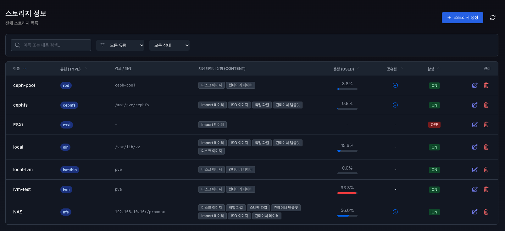
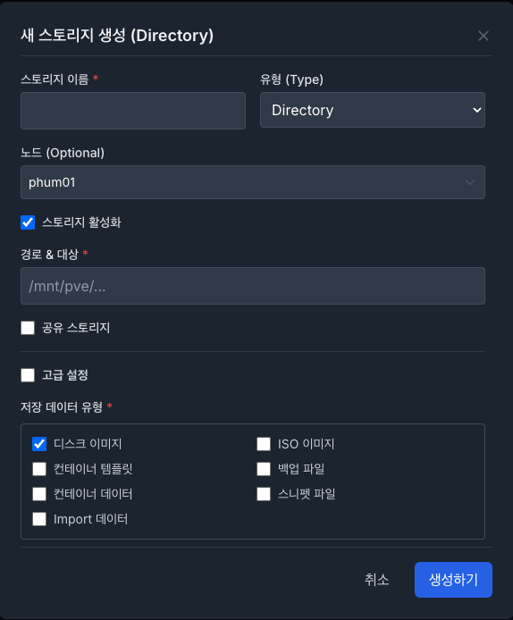
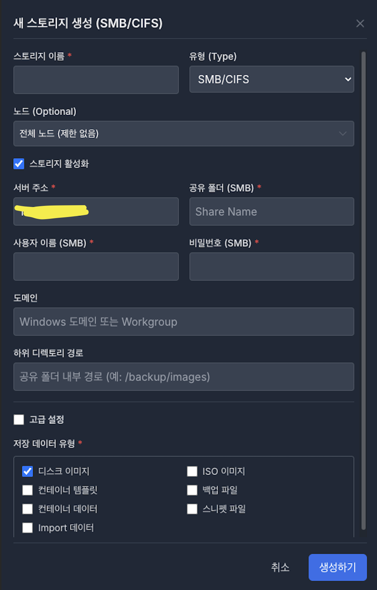
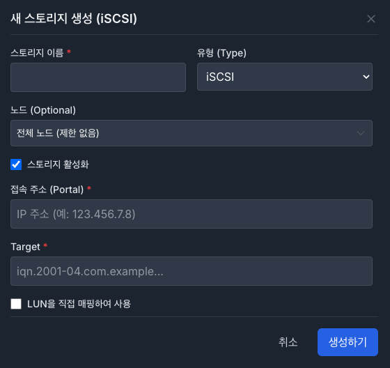
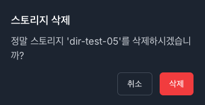

10. 스토리지 (Storage)#

1.1. 스토리지 목록 모니터링#
스토리지 이름 : 지정된 스토리지 이름
유형(Type) : 스토리지 타입
경로/대상 : target 값으로 스토리지 생성 위치 및 대상
저장 데이터 유형 (Content) : 해당 스토리지의 저장 데이터 유형 (Contents)
용량 (Used) : 현재 스토리지 사용량
공유됨 : 공유 스토리지 여부 ( 체크 표시 )
활성 : 스토리지 활성 여부 ( On / Off )
관리 : 해당 스토리지 수정(수정 아이콘) & 삭제(쓰레기통 아이콘) 기능
목록에서 항목을 더블 클릭 시, 해당 항목 수정 모달 창이 출력됩니다.
스토리지 생성은 오른쪽 상단 스토리지 생성 버튼을 클릭 시 생성 모달 창이 출력됩니다.
스토리지 생성 버튼 옆 화살표 아이콘으로 새로고침이 가능합니다.
1.2. 스토리지 목록 필터링 및 정렬#
이름 또는 내용으로 검색 필터링
스토리지 타입 및 활성 상태 필터링
이름, 유형, 용량, 공유 여부, 활성 여부에 따라 오름차순, 내림차순 정렬

1.3.1. 새 스토리지 생성 - 공통#
모든 스토리지 유형에 공통으로 적용되는 기본 설정 항목
스토리지 이름 (필수 입력 값) : 스토리지를 식별하기 위한 고유 이름을 입력 (동일한 이름의 스토리지는 생성할 수 없습니다.)
유형(Type) (필수 입력 값) : 생성할 스토리지 타입을 지정, 선택한 유형에 따라 추가 입력 항목이 다름
노드(Optional) : 스토리지를 사용할 Proxmox 노드 범위를 지정, 기본값은 전체 노드 (제한 없음), 특정 노드에서만 사용해야 하는 경우 해당 노드만 선택
저장 데이터 유형 (Content) (필수 입력 값): 해당 스토리지의 저장 데이터 유형 (Contents)을 지정, 스토리지 타입 별로 기본 값 및 설정 가능한 목록이 다를 수 있습니다.
각 타입별 생성 필수 입력 값을 입력하지 않으면 생성이 불가합니다.
1.3.2. 새 스토리지 생성 - Directory#
로컬 디렉터리 기반 스토리지를 생성, 호스트의 파일 시스템 경로를 스토리지로 사용
경로/대상 (필수 입력 값): 스토리지로 사용할 호스트의 디렉터리 경로를 지정, 해당 경로는 노드에 실제로 존재해야 하며, 쓰기 권한이 필요합니다.
스토리지 활성화 : 스토리지 활성 여부 ( On / Off ) 체크박스
활성화(On): 즉시 사용 가능
비활성화(Off): 설정은 유지되며 사용은 불가
공유 스토리지 : 스토리지를 공유 스토리지로 사용할 것인지에 대한 체크박스
고급 설정은 파트에서 설명합니다.

1.3.3. 새 스토리지 생성 - LVM#
LVM(Local Volume Manager) 기반 스토리지를 생성, 호스트에 연결된 디스크를 논리 볼륨으로 관리하여 VM 디스크 저장소로 사용
볼륨 그룹 (필수 입력 값) : 여러 개의 물리 디스크(PV)를 하나의 논리 스토리지 풀로 묶은 단위. LVM 스토리지는 반드시 하나의 볼륨 그룹을 기반으로 생성, 검색할 노드를 지정해야 볼륨 그룹 목록을 확인 할 수 있습니다.
검색할 노드 (필수 입력 값) : 볼륨 그룹을 검색할 Proxmox 노드를 선택. 선택한 노드에 실제로 존재하는 볼륨 그룹만 목록에 표시
볼륨 제거 시 영구 삭제 : 해당 스토리지에서 볼륨을 삭제할 때,
체크함: 디스크 데이터까지 완전히 삭제 (복구 불가)
해제함: 볼륨만 제거되며, 실제 디스크 데이터는 유지
권장 사항: 운영 환경에서는 데이터 보호를 위해 기본적으로 비활성화를 권장
공유 스토리지 : 해당 LVM 스토리지를 여러 노드에서 공통으로 사용하는 공유 스토리지로 설정할지 여부, 일반 LVM은 노드 로컬 스토리지이므로, 실제로 공유 스토리지 환경(예: SAN, iSCSI, FC)이 아닌 경우 체크하지 않아야 한다.
고급 설정은 파트에서 설명합니다.

1.3.4. 새 스토리지 생성 - LVM-Thin#
LVM-Thin은 LVM 기반의 씬 프로비저닝(Thin Provisioning) 스토리지, 필요한 만큼만 디스크 공간을 할당하여 VM 디스크를 생성 가능
볼륨 그룹 (필수 입력 값) : LVM-Thin 스토리지가 생성될 볼륨 그룹(VG) 을 선택, 선택 가능한 볼륨 그룹은 지정한 노드에 실제 존재하는 VG 목록입니다. LVM 스토리지와 동일한 방식으로 동작
검색할 노드 (필수 입력 값) : LVM과 동일합니다.
씬 풀 (필수 입력 값) : 선택한 볼륨 그룹 내에 존재하는 LVM Thin Pool을 지정, Thin Pool은 실제 디스크 공간을 관리하는 논리 풀이며, VM 디스크는 이 Thin Pool 위에 생성 (Thin Pool이 존재하지 않는 경우, 사전에 LVM Thin Pool을 생성해야 합니다.)
검색할 노드를 지정하고 볼륨 그룹을 선택해야 씬 풀 목록을 확인 할 수 있습니다.

1.3.5. 새 스토리지 생성 - NFS#
NFS(Network File System)는 외부 NFS 서버의 디렉터리를 네트워크를 통해 마운트하여 사용하는 스토리지
입니다. 여러 노드에서 동시에 접근 가능한 공유 스토리지 구성에 주로 사용
서버 주소 (필수 입력 값) : NFS 서비스를 제공하는 서버의 IP 주소 또는 호스트명을 입력
공유 디렉터리 - export 경로 (필수 입력 값) : NFS 서버에서 외부로 공유(export)된 디렉터리 경로를 입력 (해당 경로는 NFS 서버 설정(
/etc/exports)에 사전에 등록되어 있어야 합니다.), Proxmox 노드는 이 디렉터리를 스토리지로 마운트하여 사용합니다.고급 설정은 파트에서 설명합니다.

1.3.6. 새 스토리지 생성 - SMB/CIFS#
SMB/CIFS는 Windows 서버 또는 NAS에서 제공하는 파일 공유 폴더를 스토리지로 사용하는 방식, 주로 Windows 파일 서버, Synology / QNAP NAS와 연동할 때 사용
서버 주소 (필수 입력 값) : SMB(CIFS) 서비스를 제공하는 서버의 IP 주소 또는 호스트명을 입력
사용자 이름 - SMB (필수 입력 값) : SMB 서버(Windows 또는 NAS)에 접속할 때 사용하는 계정 이름
비밀번호 - SMB (필수 입력 값) : 위에서 입력한 SMB 사용자 계정의 비밀번호
공유 폴더 - SMB (필수 입력 값) : SMB 서버에서 외부로 공유된 최상위 공유 이름(Share Name)을 입력, SMB 서버의 사용자와 비밀번호, 서버 주소가 올바르면 목록이 표시됩니다.
도메인 : Windows 도메인 환경 또는 Workgroup 이름을 입력, 도메인 환경이 아닌 경우 비워두거나 기본값(예: WORKGROUP)을 사용
하위 디렉토리 경로 : 공유 폴더 내부에서 실제로 사용할 하위 디렉터리 경로를 지정, 입력하지 않으면 공유 폴더의 최상위 경로가 사용
고급 설정은 파트에서 설명합니다.

1.3.7. 새 스토리지 생성 - iSCSI#
iSCSI는 네트워크를 통해 원격 서버의 블록 디바이스(LUN)를 로컬 디스크처럼 사용하는 스토리지 방식, 고성능 스토리지나 SAN 환경에서 주로 사용
접속 주소 - portal (필수 입력 값) : iSCSI 서비스를 제공하는 서버(Target 서버)의 IP 주소 또는 호스트명을 입력, Proxmox는 이 주소를 통해 iSCSI Target을 검색하고 연결 (올바른 값을 입력해야 타겟 목록이 출력된다.)
Target (필수 입력 값) : iSCSI 서버에서 제공하는 iSCSI Target 이름(IQN) 을 선택 또는 입력, iSCSI 서버에 정의된 논리적 스토리지 단위이며, 그 안에 하나 이상의 LUN이 포함
LUN을 직접 매핑하여 사용 : iSCSI Target 안에 있는 LUN을 별도의 스토리지로 직접 사용할지 여부를 설정하는 옵션
체크하지 않은 경우 (기본 권장)
iSCSI Target 전체를 하나의 스토리지로 사용
Proxmox가 LUN을 내부적으로 관리
일반적인 VM/CT 스토리지 구성에 적합
체크한 경우
Target 내 각 LUN을 개별 스토리지로 직접 매핑
고급 사용자 또는 기존 SAN 환경과 연동할 때 사용
잘못 설정할 경우 데이터 충돌 위험이 있으므로 주의가 필요

1.3.8. 새 스토리지 생성 - 고급 설정#
고급 설정은 스토리지 성능, 공간 사용 방식, 스냅샷 동작 방식에 영향을 줍니다. 일반적인 사용 환경에서는
기본값 사용을 권장하며, 필요 시에만 변경합니다.
NFS 버전 : NFS 스토리지에서만 사용되는 고급 설정 항목, NFS 서버와 통신할 NFS 프로토콜 버전을 직접 지정
기본값은 서버와 자동 협상되며, 특정 서버 호환성 또는 성능 이슈가 있는 경우에만 수동 지정
사전할당 (Preallocation) : 디스크 이미지를 생성할 때, 저장 공간을 미리 할당하는 방식을 설정, 스토리지 성능과 실제 디스크 사용량에 영향을 줍니다.
Default : 스토리지 타입에 따라 권장 기본값 자동 적용, 특별한 요구 사항이 없다면 이 옵션 권장
Off : 실제 데이터가 기록될 때만 공간을 할당, 초기 생성 속도는 빠르나 디스크 단편화 및 성능 저하 가능성 있음
Metadata : 메타데이터만 미리 할당, 공간 효율과 성능의 중간 선택지이며 Thin Provisioning 환경에서 자주 사용
Full (Posix-Fallocate) : POSIX fallocate 방식으로 전체 공간을 미리 할당, 빠른 I/O 성능이며 파일 시스템이 fallocate를 지원해야 함
Full : 전체 디스크 용량을 즉시 할당, 가장 안정적인 성능으로 실제 사용량과 관계없이 디스크 공간을 즉시 차지
스냅샷 허용 (Volume-Chain 방식) : 스토리지에서 스냅샷 기능 사용 여부를 설정, Volume-Chain 방식은 기존 볼륨 위에 변경 내용을 체인 형태로 기록하는 구조 (LVM, LVM-Thin, 일부 파일 기반 스토리지에서 주로 사용)
활성화 시
VM/컨테이너 스냅샷 사용 가능
백업, 롤백 작업에 유리
일부 스토리지 타입에서는 성능 저하 가능성 있음
비활성화 시
스냅샷 기능 사용 불가
단순한 스토리지 구성에 적합
성능과 안정성을 우선할 경우 선택

1.4. 스토리지 수정#
Directory: 스토리지 활성화, 공유 스토리지 변경, 고급 설정, 저장 데이터 유형의 변경이 가능합니다.
LVM: 스토리지 활성화, 노드 설정, 볼륨 제거 시 영구 삭제 체크, 공유 스토리지 변경, 고급 설정, 저장 데이터 유형의 변경이 가능합니다.
LVM-Thin: 스토리지 활성화, 노드 설정, 저장 데이터 유형의 변경이 가능합니다.
CIFS: 스토리지 활성화, 노드 설정, 고급 설정, 저장 데이터 유형의 변경이 가능합니다.
iSCSI: 스토리지 활성화, 노드 설정, LUN 매핑 설정 변경이 가능합니다.
NFS: 스토리지 활성화, 고급 설정, 저장 데이터 유형 변경이 가능합니다.

1.5. 스토리지 삭제#
삭제 버튼 클릭 시, 삭제 모달이 나오고 삭제 버튼을 클릭 시, 삭제됩니다.